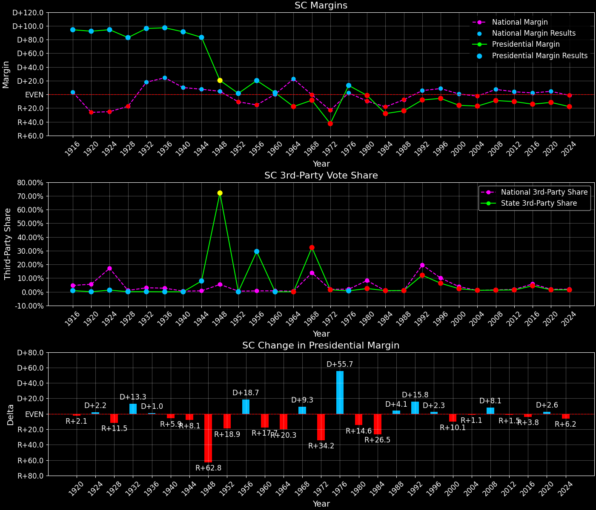
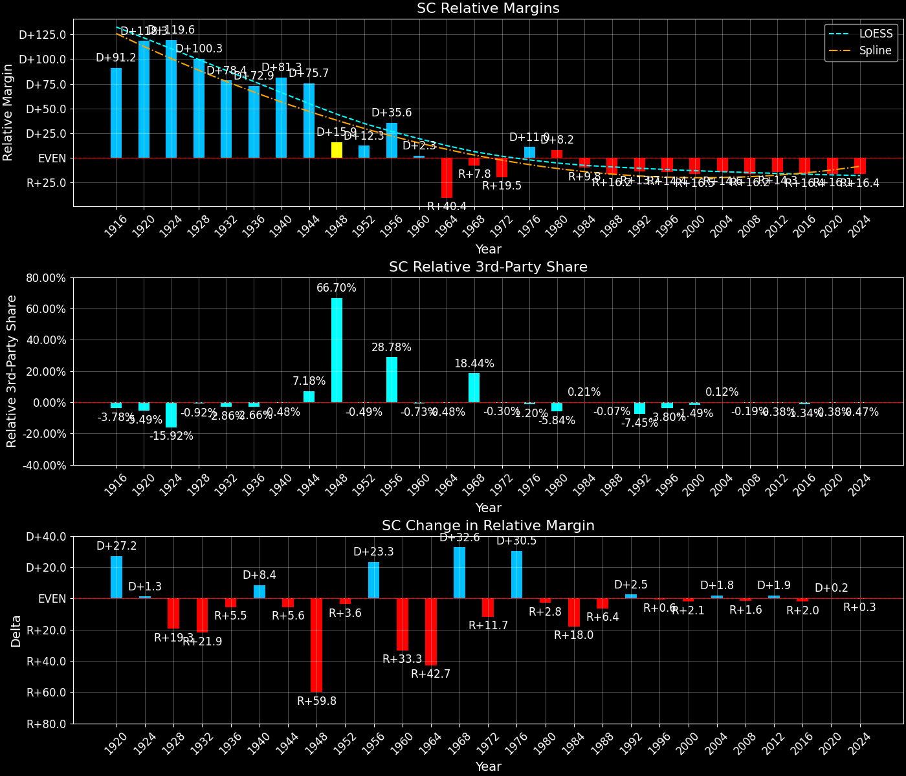

South Carolina (SC) — Statewide

Margins · 3rd-Party share · Pres. deltas

Relative margins · Relative 3rd-Party · Rel. deltas
South Carolina (SC) — Total Data
| Year | D | R | State Margin | Nat. Margin | Rel. Margin | Total votes | EVs |
|---|---|---|---|---|---|---|---|
| 1952 | 173,004(50.7%) | 168,082(49.3%) | D+1.4 | R+10.9 | D+12.3 | 341,086 | 8 |
| 1956 | 136,372(45.4%)(Δ -36,632) | 75,700(25.2%)(Δ -92,382) | D+20.2(Δ D+18.7) | R+15.4(Δ R+4.5) | D+35.6(Δ D+23.3) | 300,583(Δ -40,503) | 8 |
| 1960 | 198,129(51.2%)(Δ 61,757) | 188,558(48.8%)(Δ 112,858) | D+2.5(Δ R+17.7) | D+0.2(Δ D+15.6) | D+2.3(Δ R+33.3) | 386,688(Δ 86,105) | 8 |
| 1964 | 215,700(41.1%)(Δ 17,571) | 309,048(58.9%)(Δ 120,490) | R+17.8(Δ R+20.3) | D+22.6(Δ D+22.4) | R+40.4(Δ R+42.7) | 524,756(Δ 138,068) | 8 |
| 1968 | 197,486(29.6%)(Δ -18,214) | 254,062(38.1%)(Δ -54,986) | R+8.5(Δ D+9.3) | R+0.7(Δ R+23.3) | R+7.8(Δ D+32.6) | 666,982(Δ 142,226) | 8 |
| 1972 | 189,270(27.9%)(Δ -8,216) | 478,427(70.6%)(Δ 224,365) | R+42.7(Δ R+34.2) | R+23.1(Δ R+22.4) | R+19.5(Δ R+11.7) | 677,880(Δ 10,898) | 8 |
| 1976 | 450,825(56.2%)(Δ 261,555) | 346,140(43.1%)(Δ -132,287) | D+13.0(Δ D+55.7) | D+2.1(Δ D+25.2) | D+11.0(Δ D+30.5) | 802,594(Δ 124,714) | 8 |
| 1980 | 427,560(48.0%)(Δ -23,265) | 441,207(49.6%)(Δ 95,067) | R+1.5(Δ R+14.6) | R+9.7(Δ R+11.8) | D+8.2(Δ R+2.8) | 890,083(Δ 87,489) | 8 |
| 1984 | 344,470(35.6%)(Δ -83,090) | 615,539(63.6%)(Δ 174,332) | R+28.0(Δ R+26.5) | R+18.2(Δ R+8.5) | R+9.8(Δ R+18.0) | 968,540(Δ 78,457) | 8 |
| 1988 | 370,554(37.6%)(Δ 26,084) | 606,443(61.5%)(Δ -9,096) | R+23.9(Δ D+4.1) | R+7.7(Δ D+10.5) | R+16.2(Δ R+6.4) | 986,009(Δ 17,469) | 8 |
| 1992 | 479,514(39.9%)(Δ 108,960) | 577,507(48.0%)(Δ -28,936) | R+8.1(Δ D+15.8) | D+5.6(Δ D+13.3) | R+13.7(Δ D+2.5) | 1,202,527(Δ 216,518) | 8 |
| 1996 | 506,283(44.0%)(Δ 26,769) | 573,458(49.8%)(Δ -4,049) | R+5.8(Δ D+2.3) | D+8.5(Δ D+3.0) | R+14.4(Δ R+0.6) | 1,151,689(Δ -50,838) | 8 |
| 2000 | 565,561(40.9%)(Δ 59,278) | 785,937(56.8%)(Δ 212,479) | R+15.9(Δ R+10.1) | D+0.5(Δ R+8.0) | R+16.5(Δ R+2.1) | 1,382,717(Δ 231,028) | 8 |
| 2004 | 661,699(40.9%)(Δ 96,138) | 937,974(58.0%)(Δ 152,037) | R+17.1(Δ R+1.1) | R+2.5(Δ R+3.0) | R+14.6(Δ D+1.8) | 1,617,730(Δ 235,013) | 8 |
| 2008 | 862,449(44.9%)(Δ 200,750) | 1,034,896(53.9%)(Δ 96,922) | R+9.0(Δ D+8.1) | D+7.3(Δ D+9.7) | R+16.2(Δ R+1.6) | 1,920,969(Δ 303,239) | 8 |
| 2012 | 865,941(44.1%)(Δ 3,492) | 1,071,645(54.6%)(Δ 36,749) | R+10.5(Δ R+1.5) | D+3.9(Δ R+3.4) | R+14.3(Δ D+1.9) | 1,964,118(Δ 43,149) | 9 |
| 2016 | 855,373(40.7%)(Δ -10,568) | 1,155,389(54.9%)(Δ 83,744) | R+14.3(Δ R+3.8) | D+2.1(Δ R+1.8) | R+16.4(Δ R+2.0) | 2,103,027(Δ 138,909) | 9 |
| 2020 | 1,091,541(43.4%)(Δ 236,168) | 1,385,103(55.1%)(Δ 229,714) | R+11.7(Δ D+2.6) | D+4.5(Δ D+2.4) | R+16.1(Δ D+0.2) | 2,513,329(Δ 410,302) | 9 |
| 2024 | 1,028,452(40.4%)(Δ -63,089) | 1,483,747(58.2%)(Δ 98,644) | R+17.9(Δ R+6.2) | R+1.5(Δ R+5.9) | R+16.4(Δ R+0.3) | 2,548,140(Δ 34,811) | 9 |
Column explanations
- Δ
- Change (delta) in the value from the previous election year.
- Year
- Election year.
- D
- Number of votes for the Democratic candidate (raw count(pct%)).
- R
- Number of votes for the Republican candidate (raw count(pct%)).
- State Margin
- Margin between the two major-party candidates, including third-party votes ((D - R)/total).
- Nat. Margin
- The national presidential margin for that year, including third-party votes ((D_total - R_total)/total_votes).
- Rel. Margin
- The presidential margin relative to the national presidential margin (Margin - Nat. Margin).
- Total votes
- Total voter turnout or ballots cast (when provided).
- EVs
- Number of electoral votes allocated to this state or unit.
South Carolina (SC) — Third-Party Data
| Year | D | R | Other votes | State 3rd-Party Share | 3rd-Party Nat. Share | 3rd-Party Rel. Share |
|---|---|---|---|---|---|---|
| 1952 | 173,004(50.7%) | 168,082(49.3%) | 0(0.0%) | 0.00% | 0.49% | -0.49% |
| 1956 | 136,372(45.4%)(Δ -36,632) | 75,700(25.2%)(Δ -92,382) | 88,511(29.4%) | 29.45% | 0.67% | 28.78% |
| 1960 | 198,129(51.2%)(Δ 61,757) | 188,558(48.8%)(Δ 112,858) | 1(0.0%) | 0.00% | 0.73% | -0.73% |
| 1964 | 215,700(41.1%)(Δ 17,571) | 309,048(58.9%)(Δ 120,490) | 8(0.0%) | 0.00% | 0.48% | -0.48% |
| 1968 | 197,486(29.6%)(Δ -18,214) | 254,062(38.1%)(Δ -54,986) | 215,434(32.3%) | 32.30% | 13.86% | 18.44% |
| 1972 | 189,270(27.9%)(Δ -8,216) | 478,427(70.6%)(Δ 224,365) | 10,183(1.5%) | 1.50% | 1.80% | -0.30% |
| 1976 | 450,825(56.2%)(Δ 261,555) | 346,140(43.1%)(Δ -132,287) | 5,629(0.7%) | 0.70% | 1.90% | -1.20% |
| 1980 | 427,560(48.0%)(Δ -23,265) | 441,207(49.6%)(Δ 95,067) | 21,316(2.4%) | 2.39% | 8.24% | -5.84% |
| 1984 | 344,470(35.6%)(Δ -83,090) | 615,539(63.6%)(Δ 174,332) | 8,531(0.9%) | 0.88% | 0.67% | 0.21% |
| 1988 | 370,554(37.6%)(Δ 26,084) | 606,443(61.5%)(Δ -9,096) | 9,012(0.9%) | 0.91% | 0.98% | -0.07% |
| 1992 | 479,514(39.9%)(Δ 108,960) | 577,507(48.0%)(Δ -28,936) | 145,506(12.1%) | 12.10% | 19.55% | -7.45% |
| 1996 | 506,283(44.0%)(Δ 26,769) | 573,458(49.8%)(Δ -4,049) | 71,948(6.2%) | 6.25% | 10.05% | -3.80% |
| 2000 | 565,561(40.9%)(Δ 59,278) | 785,937(56.8%)(Δ 212,479) | 31,219(2.3%) | 2.26% | 3.75% | -1.49% |
| 2004 | 661,699(40.9%)(Δ 96,138) | 937,974(58.0%)(Δ 152,037) | 18,057(1.1%) | 1.12% | 1.00% | 0.12% |
| 2008 | 862,449(44.9%)(Δ 200,750) | 1,034,896(53.9%)(Δ 96,922) | 23,624(1.2%) | 1.23% | 1.42% | -0.19% |
| 2012 | 865,941(44.1%)(Δ 3,492) | 1,071,645(54.6%)(Δ 36,749) | 26,532(1.4%) | 1.35% | 1.73% | -0.38% |
| 2016 | 855,373(40.7%)(Δ -10,568) | 1,155,389(54.9%)(Δ 83,744) | 92,265(4.4%) | 4.39% | 5.73% | -1.34% |
| 2020 | 1,091,541(43.4%)(Δ 236,168) | 1,385,103(55.1%)(Δ 229,714) | 36,685(1.5%) | 1.46% | 1.84% | -0.38% |
| 2024 | 1,028,452(40.4%)(Δ -63,089) | 1,483,747(58.2%)(Δ 98,644) | 35,941(1.4%) | 1.41% | 1.88% | -0.47% |
Column explanations
- Year
- Election year.
- D
- Number of votes for the Democratic candidate (raw count(pct%)).
- R
- Number of votes for the Republican candidate (raw count(pct%)).
- Other votes
- Number of votes for third-party (other) candidates (raw count(pct%)).
- State 3rd-Party Share
- Share of the vote received by third-party (other) candidates.
- 3rd-Party Nat. Share
- The national third-party share for that year (3rd-Party votes / total votes).
- 3rd-Party Rel. Share
- Third-party share relative to the national third-party share (3rd-Party share - Nat. 3rd-Party share).

Two-party margins · relative · deltas
South Carolina (SC) — Two-Party Data
| Year | D | R | 2-Party Margin | 2-Party Nat. Margin | 2-Party Rel. Margin | EVs |
|---|---|---|---|---|---|---|
| 1952 | 173,004(50.7%) | 168,082(49.3%) | D+1.4 | R+10.9 | D+12.3 | 8 |
| 1956 | 136,372(64.3%)(Δ -36,632) | 75,700(35.7%)(Δ -92,382) | D+28.6(Δ D+27.2) | R+15.5(Δ R+4.6) | D+44.1(Δ D+31.8) | 8 |
| 1960 | 198,129(51.2%)(Δ 61,757) | 188,558(48.8%)(Δ 112,858) | D+2.5(Δ R+26.1) | D+0.2(Δ D+15.7) | D+2.3(Δ R+41.8) | 8 |
| 1964 | 215,700(41.1%)(Δ 17,571) | 309,048(58.9%)(Δ 120,490) | R+17.8(Δ R+20.3) | D+22.7(Δ D+22.5) | R+40.5(Δ R+42.8) | 8 |
| 1968 | 197,486(43.7%)(Δ -18,214) | 254,062(56.3%)(Δ -54,986) | R+12.5(Δ D+5.3) | R+0.8(Δ R+23.5) | R+11.7(Δ D+28.8) | 8 |
| 1972 | 189,270(28.3%)(Δ -8,216) | 478,427(71.7%)(Δ 224,365) | R+43.3(Δ R+30.8) | R+23.6(Δ R+22.8) | R+19.7(Δ R+8.0) | 8 |
| 1976 | 450,825(56.6%)(Δ 261,555) | 346,140(43.4%)(Δ -132,287) | D+13.1(Δ D+56.4) | D+2.1(Δ D+25.7) | D+11.0(Δ D+30.8) | 8 |
| 1980 | 427,560(49.2%)(Δ -23,265) | 441,207(50.8%)(Δ 95,067) | R+1.6(Δ R+14.7) | R+10.6(Δ R+12.7) | D+9.0(Δ R+2.0) | 8 |
| 1984 | 344,470(35.9%)(Δ -83,090) | 615,539(64.1%)(Δ 174,332) | R+28.2(Δ R+26.7) | R+18.3(Δ R+7.7) | R+9.9(Δ R+18.9) | 8 |
| 1988 | 370,554(37.9%)(Δ 26,084) | 606,443(62.1%)(Δ -9,096) | R+24.1(Δ D+4.1) | R+7.8(Δ D+10.5) | R+16.3(Δ R+6.4) | 8 |
| 1992 | 479,514(45.4%)(Δ 108,960) | 577,507(54.6%)(Δ -28,936) | R+9.3(Δ D+14.9) | D+6.9(Δ D+14.7) | R+16.2(Δ D+0.2) | 8 |
| 1996 | 506,283(46.9%)(Δ 26,769) | 573,458(53.1%)(Δ -4,049) | R+6.2(Δ D+3.0) | D+9.5(Δ D+2.6) | R+15.7(Δ D+0.5) | 8 |
| 2000 | 565,561(41.8%)(Δ 59,278) | 785,937(58.2%)(Δ 212,479) | R+16.3(Δ R+10.1) | D+0.5(Δ R+8.9) | R+16.8(Δ R+1.1) | 8 |
| 2004 | 661,699(41.4%)(Δ 96,138) | 937,974(58.6%)(Δ 152,037) | R+17.3(Δ R+1.0) | R+2.5(Δ R+3.0) | R+14.8(Δ D+2.1) | 8 |
| 2008 | 862,449(45.5%)(Δ 200,750) | 1,034,896(54.5%)(Δ 96,922) | R+9.1(Δ D+8.2) | D+7.4(Δ D+9.9) | R+16.5(Δ R+1.7) | 8 |
| 2012 | 865,941(44.7%)(Δ 3,492) | 1,071,645(55.3%)(Δ 36,749) | R+10.6(Δ R+1.5) | D+3.9(Δ R+3.4) | R+14.5(Δ D+1.9) | 9 |
| 2016 | 855,373(42.5%)(Δ -10,568) | 1,155,389(57.5%)(Δ 83,744) | R+14.9(Δ R+4.3) | D+2.2(Δ R+1.7) | R+17.1(Δ R+2.6) | 9 |
| 2020 | 1,091,541(44.1%)(Δ 236,168) | 1,385,103(55.9%)(Δ 229,714) | R+11.9(Δ D+3.1) | D+4.5(Δ D+2.3) | R+16.4(Δ D+0.8) | 9 |
| 2024 | 1,028,452(40.9%)(Δ -63,089) | 1,483,747(59.1%)(Δ 98,644) | R+18.1(Δ R+6.3) | R+1.5(Δ R+6.0) | R+16.6(Δ R+0.2) | 9 |
Column explanations
- Δ
- Change (delta) in the value from the previous election year.
- Year
- Election year.
- D
- Number of votes for the Democratic candidate (raw count(pct%)).
- R
- Number of votes for the Republican candidate (raw count(pct%)).
- 2-Party Margin
- Margin between the two major-party candidates, ignoring third-party votes ((D - R)/(D + R)).
- 2-Party Nat. Margin
- The national presidential margin for that year, including third-party votes ((D_total - R_total)/total_votes).
- 2-Party Rel. Margin
- The presidential margin relative to the national presidential margin (Margin - Nat. Margin).
- EVs
- Number of electoral votes allocated to this state or unit.